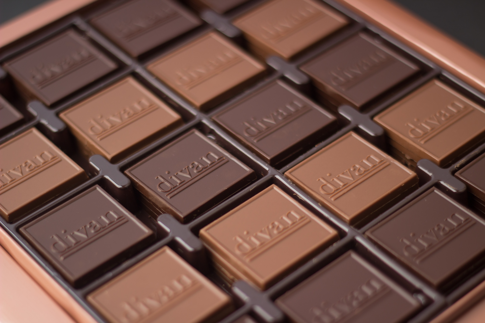

카카오 원두는 멕시코 원주민들이 음료 또는 약용으로서 귀히 여기던 것으로, 화폐로도 유통되었다. 유럽에 전해진 것은 콜럼버스(Christopher Columbus)에 의해서이지만,16세기 초 멕시코를 탐험한 에르난 코르테스(Hernán Cortés)가 스페인의 귀족층에 이를 소개함으로써 17세기 중반 유럽 전역으로 퍼졌다. 19세기 초, 네덜란드인 반 호텐(Van Houten)이 지방분의 압착, 설탕 혼합 및 고형화에 성공하여 현재와 같은 초콜릿의 원형을 만들어냄으로써 맛좋은 과자로 등장하게 되었다. 1876년에는 스위스인 다니엘 피터스(Daniel Peters)가 밀크를 첨가하는 데 성공하여 현재의 밀크 초콜릿 산업의 문을 열어 놓았다. 초콜릿은 가공성형이 자유로워 어떠한 것이라도 그 속에 넣을 수 있고, 다른 것의 속에도 넣을 수 있으므로 종류가 많으며, 계속 신제품이 개발된다. 
초콜릿은 3종류로 대별되는데, 첫째는 속에 아무것도 들어 있지 않은 초콜릿분 100%의 것, 둘째는 크림 ·너트 등이 들어 있는 초콜릿분 60∼99%의 것, 셋째는 웨이퍼 ·너트 등과 함께 만든 초콜릿분 20∼59%의 초콜릿 과자 등이다. 초콜릿은 과자 중에서도 영양가가 높고, 지방분을 다량 함유하고 있어 100g당 550kcal의 열량을 낸다. 이것을 알기 쉽게 비유하면 초콜릿 50g은 쌀밥 1공기 반의 열량을 낸다고 볼 수 있다. 특유의 성분은 테오브로민으로서 카페인과 비슷한 흥분성의 알칼로이드이지만 차나 커피만큼 강하지 않으므로 노인이나 어린이에게도 적당한 식품이다.
제조공정은 선별한 카카오콩을 열풍으로 볶아서 외피를 분리하고 과실(카카오니브: 카카오 원두의 껍질과 배를 제거하고 남은 살)을 으깨어 페이스트(반죽)처럼 만든다. 이것을 카카오매스라고 하는데, 여기에 설탕 ·밀크 ·카카오버터를 섞어 혼합기에 넣고 교반하여 고온으로 일주일 이상 정련한 다음 적당한 온도로 조종하여 원료 초콜릿을 만든다. 이것을 여러 가지 틀에 붓고 진동을 가하여 기포를 제거하고 냉각시켜 틀에서 꺼낸다. 이것을 보통 밀크 초콜릿 또는 스위트 초콜릿이라 한다. 피복 초콜릿은 원료 초콜릿 껍데기가 생기므로, 여기에 여러 가지 알맹이를 넣고 다시 초콜릿을 충전하여 냉각시켜 틀에서 꺼낸다. 또 코코아 가루를 만드는 방법은 카카오매스를 짜서 카카오버터를 분리한 다음 남은 것을 분쇄한다. 어느 공정이든 각각 독특한 기계로 자동적으로 하고 있다.
[네이버 지식백과] 초콜릿 [chocolate] (두산백과)